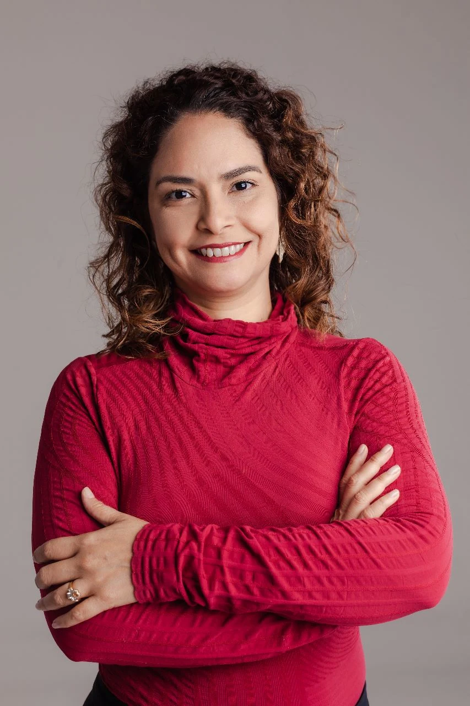

Compreender
Uma conversa individual para explorar o mapa natal, suas perguntas e os temas que fazem sentido para seu momento.
Uma leitura do mapa astral que abre espaço para reflexões sobre sua trajetória — e pode se transformar em um plano pessoal com objetivos e ações concretas.

Quem conduz um negócio também precisa encontrar tempo para olhar para a própria trajetória.
A proposta é conectar reflexão pessoal e ação consciente, sem respostas prontas.A astrologia entra como linguagem simbólica de autoconhecimento. O planejamento transforma reflexões em escolhas e compromissos definidos por você.
Uma conversa individual para explorar o mapa natal, suas perguntas e os temas que fazem sentido para seu momento.
Identificar o estado atual, refletir sobre o estado desejado e organizar prioridades pessoais e profissionais.
Quando contratado, construir um plano com pequenas ações e revisitar o percurso após três e seis meses.
Três possibilidades, da leitura inicial ao acompanhamento do planejamento pessoal.
Seu mapa astral, suas questões, um espaço de reflexão.
A leitura e um caminho pessoal para os próximos 90 dias.
Um percurso com revisões e espaço para ajustes.
Os valores acima são propostas comerciais para a fase inicial e devem ser confirmados no atendimento. A disponibilidade e o escopo final serão informados antes da contratação.
Também estamos desenvolvendo leituras simbólicas do mapa de fundação da empresa e um cotejo entre os mapas do empreendedor e do negócio. Serviços experimentais, sob consulta.
Astróloga, administradora e consciencióloga, Vânia une o interesse pelo autoconhecimento à experiência concreta no universo dos negócios.
É cofundadora e diretora comercial da Nordosudo, com mais de 25 anos de atuação em comércio internacional, operações e desenvolvimento de negócios. Sua trajetória inclui liderança comercial, relacionamento com empresas e planejamento.
Nos atendimentos, integra sua prática em astrologia a conhecimentos em Proexologia, planejamento pessoal, liderança e empreendedorismo, respeitando a singularidade de cada pessoa.
Conheça a trajetória profissional no LinkedIn ↗O foco inicial são empreendedores, profissionais em transição e pessoas que lideram projetos. Se você está planejando empreender, também pode conversar conosco.
Online, por Zoom, em horário combinado. Antes da sessão, serão solicitados os dados necessários para a elaboração do mapa natal e as questões que você deseja explorar.
Sim. No pacote Essencial, a proposta inclui o PDF do mapa, a gravação consentida e uma síntese revisada. Os pacotes seguintes incluem planejamento e, conforme a opção, revisões posteriores.
Não. A astrologia é utilizada aqui como prática simbólica de reflexão e autoconhecimento. Não substitui aconselhamento psicológico, médico, jurídico ou financeiro, nem fornece previsões empresariais comprovadas.
Fale com nossa equipe pelo WhatsApp, tire suas dúvidas e descubra qual atendimento combina com seu momento.
Conversar pelo WhatsApp ↗Atendimento via WhatsApp da Nordosudo